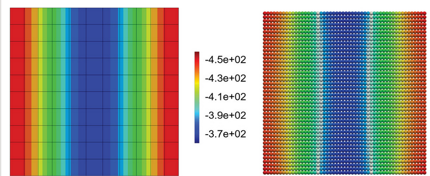
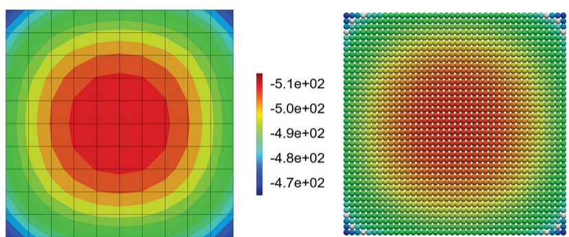
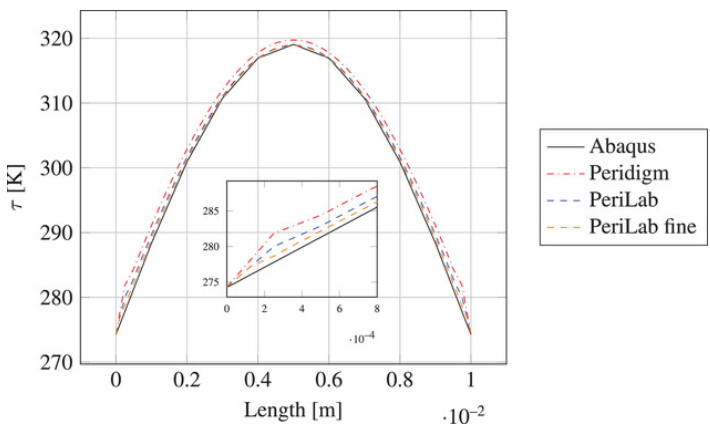

Seminar 7: Multi-physics
The theory is taken from [9]
Thermo-mechanics
\[\boldsymbol{\varepsilon}=\boldsymbol{\varepsilon}_{mechanical} + \boldsymbol{\varepsilon}_{thermal}.\]
\[\boldsymbol{\varepsilon}_{thermal} =- \boldsymbol{\alpha}\tau\]
\[\boldsymbol{\sigma}=\mathbf{C}\cdot\cdot\left(\boldsymbol{\varepsilon}_{mechanical} - \boldsymbol{\alpha}\tau \right)\]
Thermal flux
\[\rho C_v\dot{\tau} = \int_{\mathcal{H}}(\underline{h}(\textbf{x},t)\langle\boldsymbol{\xi}\rangle-\underline{h}(\textbf{x}',t)\langle\boldsymbol{\xi}'\rangle)dV_{\textbf{x}}+ S_i\]
\[\underline{h}(\textbf{x},t)\langle\boldsymbol{\xi}\rangle = \mathbf{q}^T\mathbf{K}^{-1}(\textbf{x})\boldsymbol{\xi}\]
\[\nabla\cdot\mathbf{q} = \int_{\mathcal{H}}\left[\mathbf{q}(\textbf{x}')^T\mathbf{K}^{-1}(\textbf{x}')+\mathbf{q}(\textbf{x})^T\mathbf{K}^{-1}(\textbf{x})\right]\boldsymbol{\xi}dV_{\textbf{x}}\]
\[\mathbf{q} = -\boldsymbol{\lambda}\nabla\tau\]
\[\nabla\tau = \mathbf{K}^{-1}\int_{\mathcal{H}}\left[\tau(\mathbf{x}')-\tau(\mathbf{x})\right]\boldsymbol{\xi}\underline{\omega}\langle\boldsymbol{\xi}\rangle dV_{\mathbf{x}}\]
The numerical solving process is then
\[\rho C_v \frac{\tau^{t+dt}-\tau^{t}}{dt}=\nabla\mathbf{q} + S_i\]
\[\tau^{t+dt} = dt\frac{\nabla\mathbf{q} + S_i}{\rho C_v} + \tau^{t}\]

Heat transfer to environment
\[S_i = \frac{q_{bc}}{\Delta}\]
\[q_{bc} = \kappa (\tau-\tau_{env})\]
2D
\[V_{2D}=2\pi\delta^2 h \geq \int_{\mathcal{H}}dV\]
3D
\[V_{3D}=\frac43\pi\delta^3 \geq \int_{\mathcal{H}}dV\]
\[f_{limit} \leq V_{specific} = \frac{\int_{\mathcal{H}}dV}{V_{2D\,or\,3D}}\]
\[\tau_i^{t+dt} = dt\frac{\nabla\mathbf{q}_i + \frac{\kappa (\tau_i^{t}-\tau_{env})}{dx}}{(\rho C_v)_i} + \tau^{t}_i\,.\]
 
using DifferentialEquations
using Plots
########################
N = 201 # number of points to discretize
# PD discretization
dx = 0.00005
# free length minus width of PD boundary
L = 0.02 - 4*dx # conduction
h = L / (N - 1)
X = collect(0:h:L)
k = 3
########################
function odefunc!(dudt, u, p, t)
dudt[1] = 0 # constant at boundary condition
dudt[end] = 0
# spatial second order differentiation
# utilizing second order finite difference
for i in 2:(N-1)
dudt[i] = k * (u[i-1] - 2*u[i] + u[i+1]) / h^2
end
return nothing
end
init = zeros(length(X)) # initial temperature
init[1] = 10.0 # one boundary condition
init[end] = 0 # the other boundary condition
tspan = (0.0, 2e-5)
tsave = collect(0:3e-7:2e-5)
# Define the ODE problem
prob = ODEProblem(odefunc!, init, tspan)
# Solve the ODE
sol = solve(prob, saveat=tsave)
# Access solution: sol[i, j] gives u_i at time t_j
# sol.t gives the time points
# sol.u gives the solution at each time point
# Plotting
# Plot temperature profiles at different times
plot(X, sol.u[1], label="t = $(sol.t[1])", xlabel="Position (m)", ylabel="Temperature",
title="Temperature Distribution Over Time", linewidth=2)
# Add profiles at several time points
time_indices = [1, length(sol.t)÷4, length(sol.t)÷2, 3*length(sol.t)÷4, length(sol.t)]
for idx in time_indices[2:end]
plot!(X, sol.u[idx], label="t = $(round(sol.t[idx], digits=6))", linewidth=2)
end
# Create heatmap showing evolution over time
# Convert solution to matrix format (space x time)
u_matrix = hstack([u for u in sol.u])
# Create heatmap
heatmap(sol.t, X, u_matrix, xlabel="Time (s)", ylabel="Position (m)",
title="Temperature Evolution", colorbar_title="Temperature")
# Create animation of temperature evolution
anim = @animate for i in 1:length(sol.t)
plot(X, sol.u[i], ylim=(0, 10.5), xlabel="Position (m)",
ylabel="Temperature", title="Temperature at t = $(round(sol.t[i], digits=6)) s",
linewidth=3, color=:red, legend=false)
end
gif(anim, "heat_conduction.gif", fps=10)
Time step
\[\Delta t < \text{min}\left(\frac{\left(\rho C_v\right)_i}{\sum_{j=1}^{N}\frac{\text{max}(\text{eig}(\boldsymbol{\lambda}))}{|\mathbf{\xi}_{ij}|}V_j}\right)\]
[24]
Alternative diffusion based models
\[A \frac{p^{t+dt}-p^{t}}{dt}=\nabla\mathbf{e} + S_i\]
| Parameter | Description |
|---|---|
| A | is a model factor |
| p | is the status variable |
| $\mathbf{e}$ | is the flow variable |
Examples are [37]
- Corrosion
- Diffusion
- Chemical and Water Transport